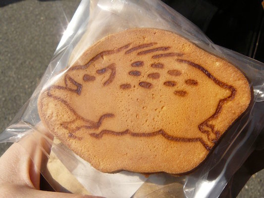
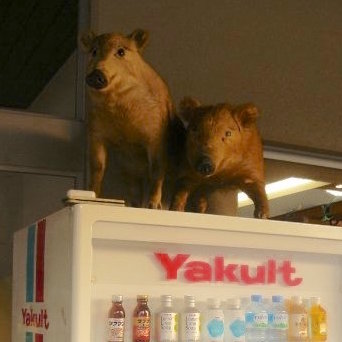
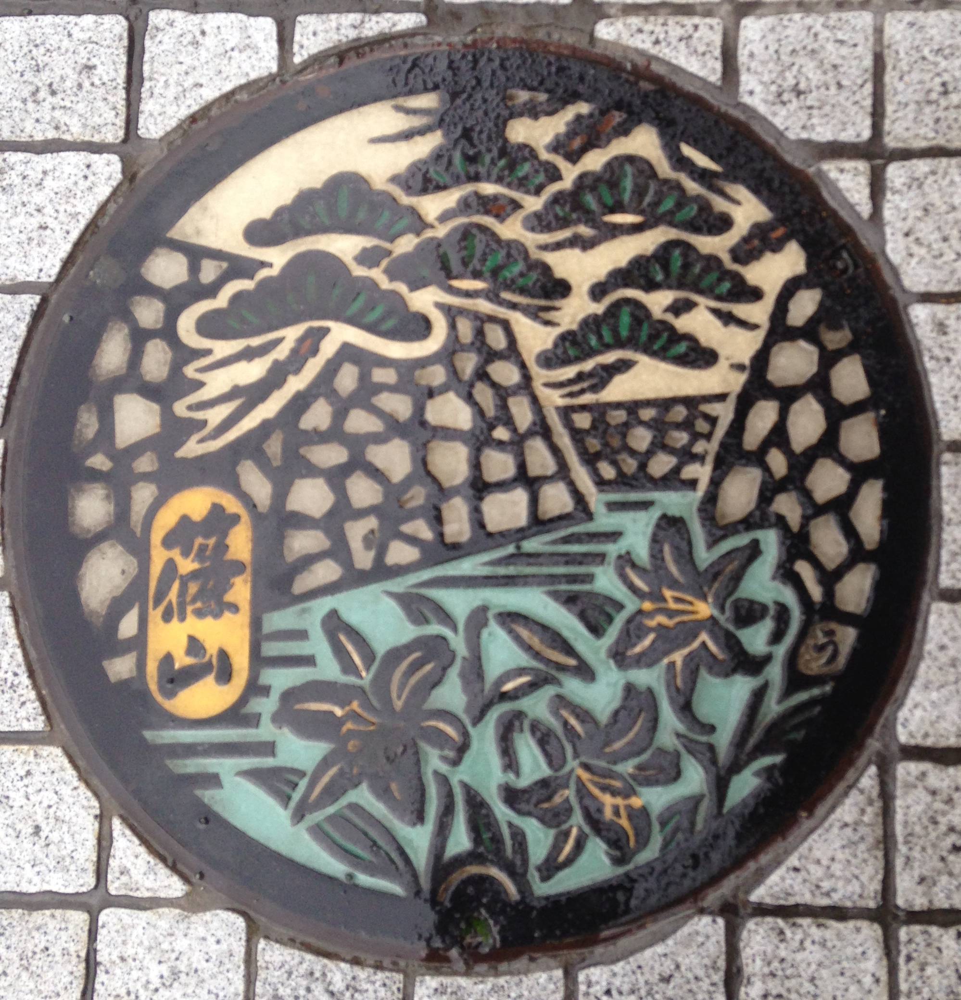
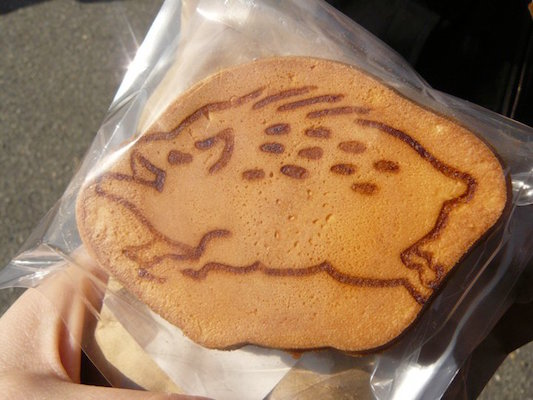
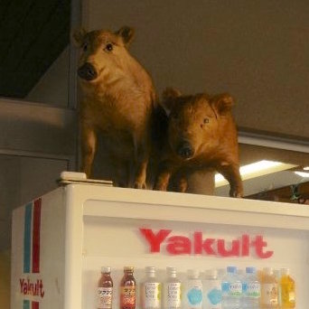
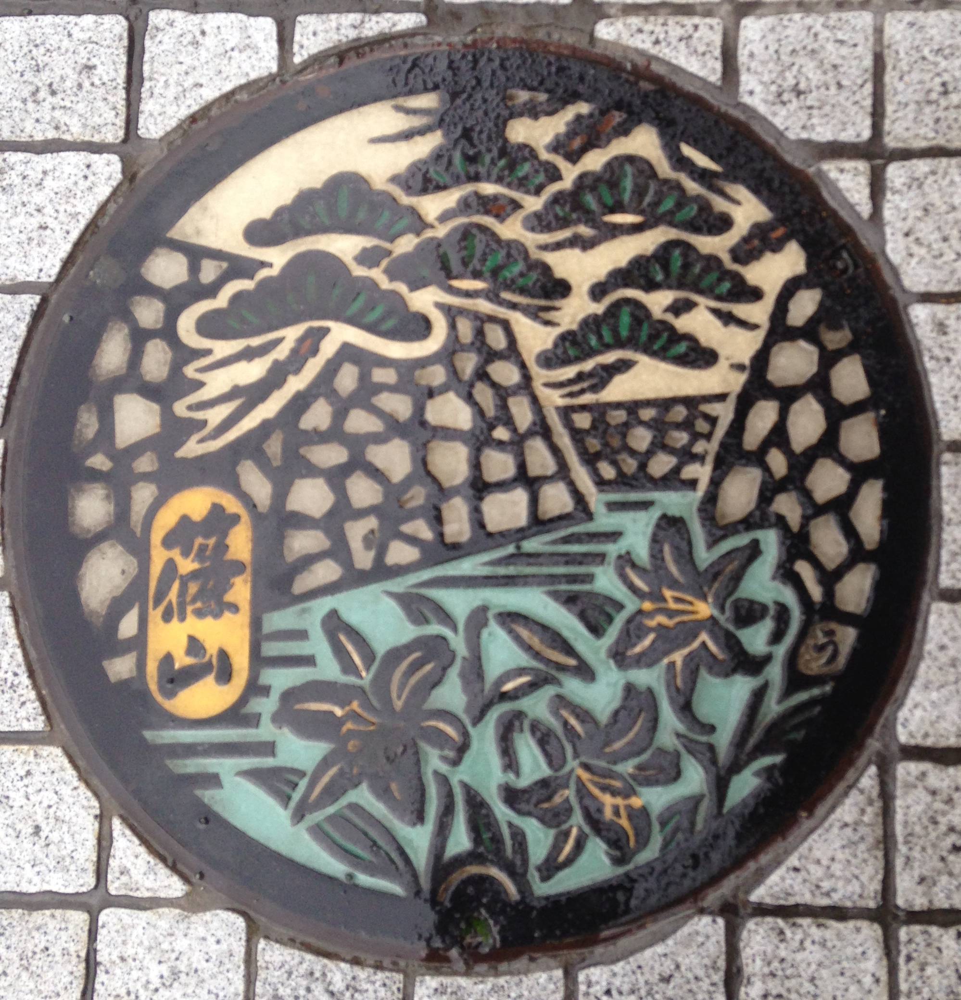
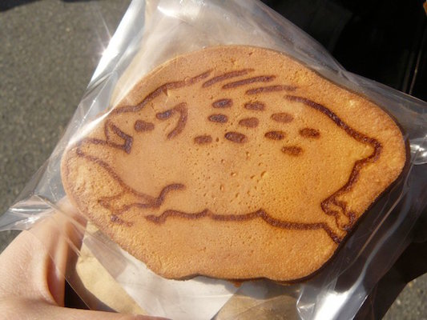
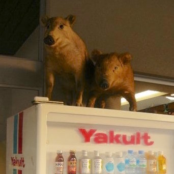
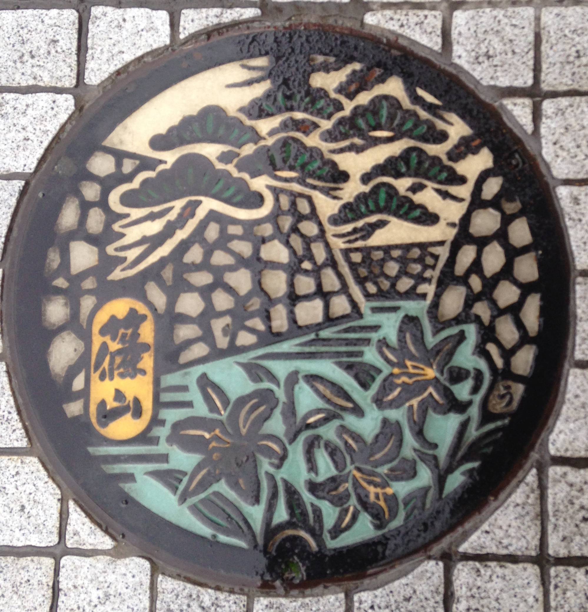
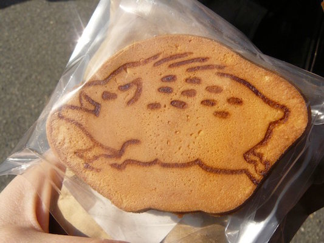
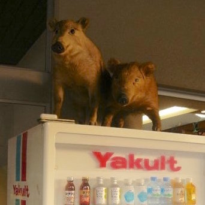
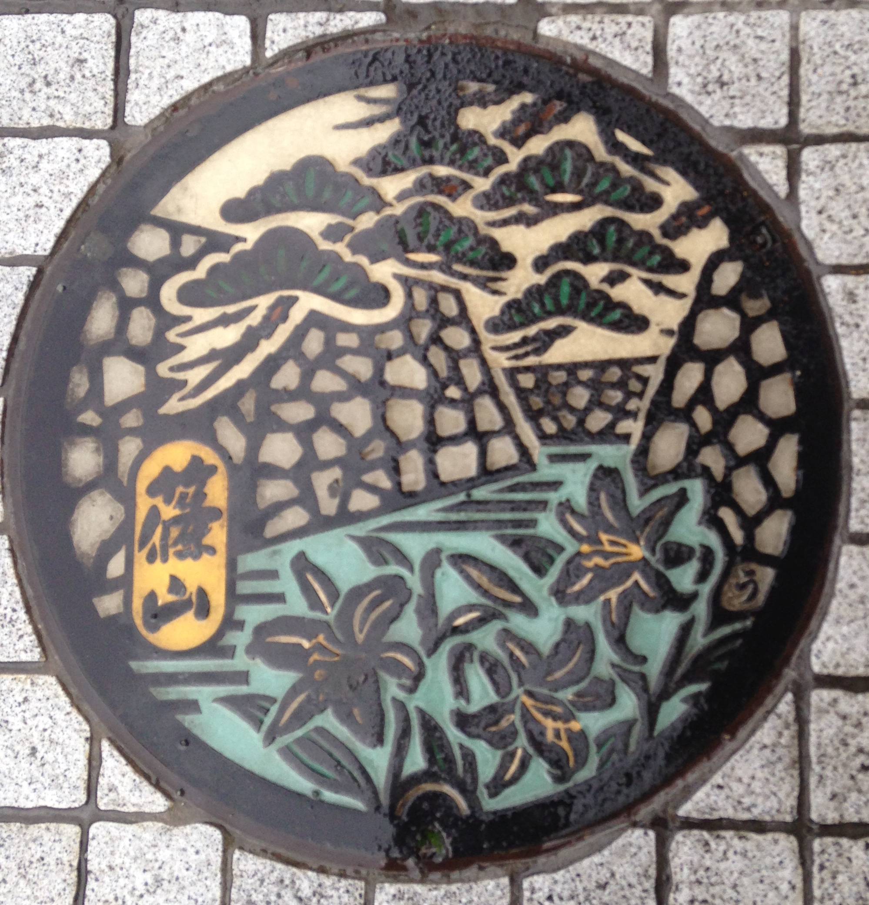
Located in the heart of Japan's Kansai region, Sasayama is a small city with a big heart and a lot of boars
Warning: submit button isn't working at the moment. Click here to see how it would have worked
Visit the official tourism website (opens in a new window) by the city of Sasayama for a closer look at Sasayama as well as lots of CSS styling that is much prettier to look at. The navigation bar in particular uses CSS to make it uniform across the pages while changing images in the bar itself. The "font size" buttons seem to switch to Japanese when you click on them, but other than that the page works well.